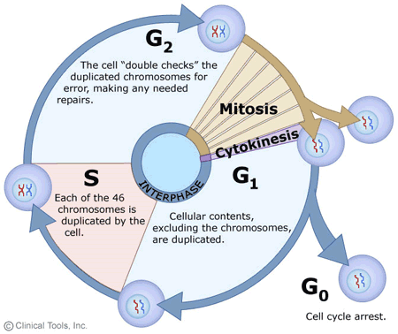
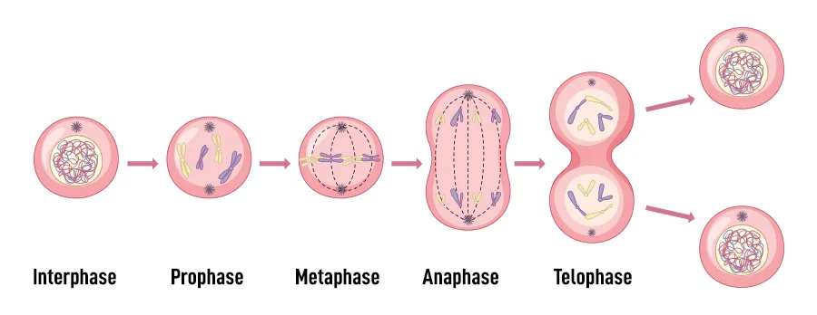
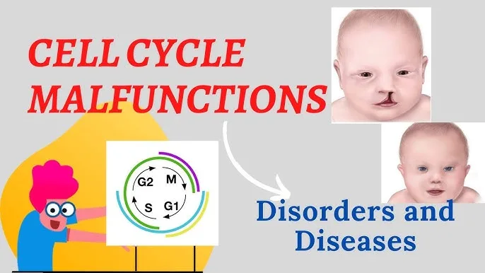
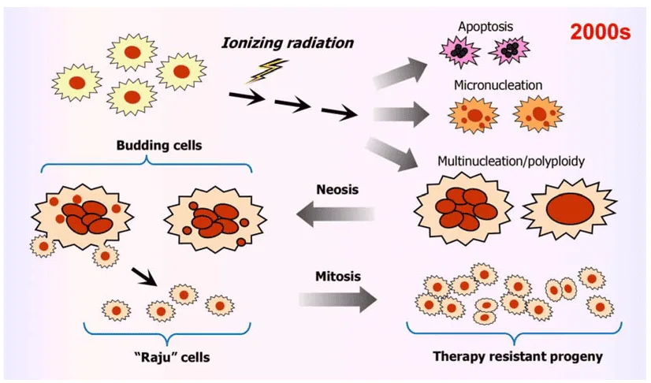
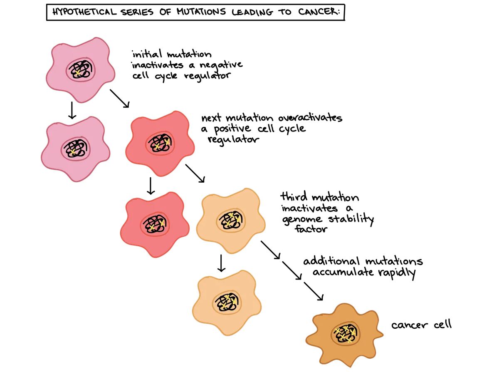
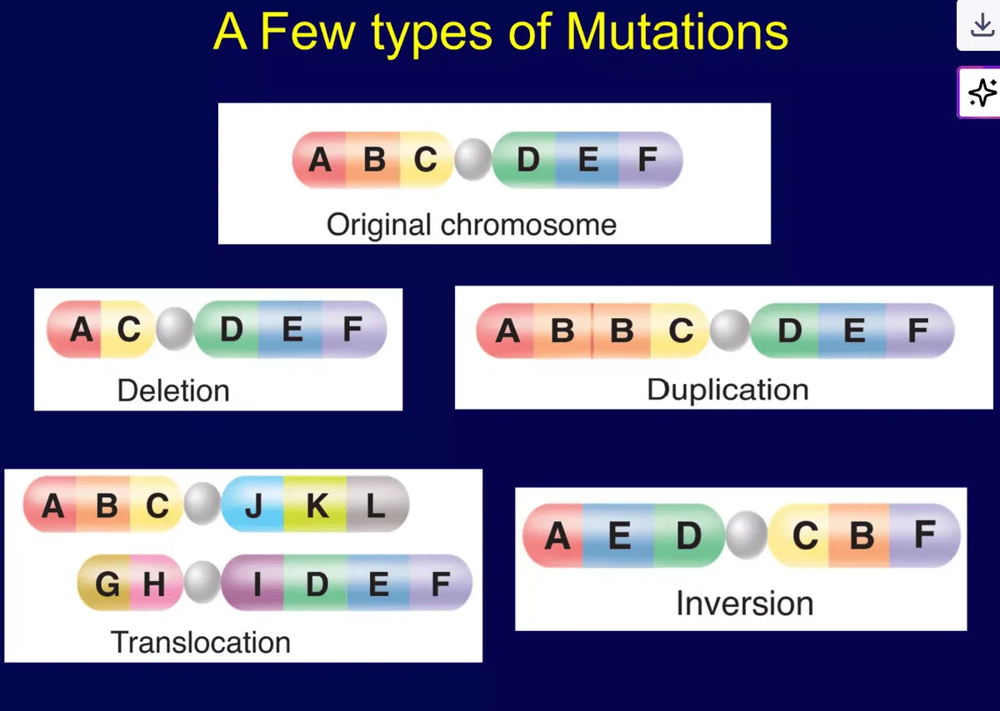

Expanded Nursing Uganda Explanation
Diseases transmission cycle should be reviewed through safe maternal and newborn assessment, early recognition of danger signs, respectful communication and timely referral. Connect the definition to vital signs, bleeding, fetal or newborn wellbeing, patient education and local protocol requirements.
01 Introduction to communicable diseases
Communicable diseases , also known as infectious diseases , pose a significant public health challenge in Africa, particularly among infants and children.
Communicable diseases are illnesses that can be spread from one person to another .
These diseases spread from person to person and, alongside malnutrition, are major contributors to illness and mortality on the continent. However, many of these diseases are preventable with proper interventions.
Communicable diseases, also known as infectious diseases or transmissible diseases are diseases that spreads from one person or animal to another or from a surface to a person .
Communicable diseases occur at all age groups outmost serious in childhood due to intensive exposure and poorly developed immunity. These diseases are to a great extent preventable
Tropical countries, Uganda, inclusive have continued to struggle with poverty related diseases that occur at an old age which include: diarrhea, parasite infestations, respiratory infections, immunizable childhood infections, eye infections and malnutrition. These countries are at the same time facing steady increase of diabetes, CVA, rheumatic conditions and cancer
02 **Communicable’ diseases are divided into**
- Contact contagious diseases
- STDs and HIV/AIDs
- Vector borne diseases
- Diseases related to contaminated water and food
- Airborne diseases
- Blood borne diseases
- Diseases from the animals and their products
- Helminthic diseases
03 Some Communicable diseases and there causative agents.
- Causative Organism Disease/Infection
- Rabies virus Rabies
- Influenza A virus Avian influenza (Bird flu)
- Vibrio cholerae Cholera
- Plasmodium species Malaria
- Severe acute respiratory syndrome coronavirus (SARS-CoV) Severe acute respiratory syndrome (SARS)
- Trypanosoma species Trypanosomiasis
- Tsetse fly Sleeping sickness (African trypanosomiasis)
- Wuchereria bancrofti Elephantiasis
- Dracunculus medinensis Guinea worm disease
- Rotavirus Diarrhea (caused by rotavirus)
- Mumps virus Mumps
- Human immunodeficiency virus (HIV) HIV/AIDS
- Varicella-zoster virus Chickenpox
- Measles virus Measles
- Yellow fever virus Yellow fever
- Arboviruses Arboviral diseases
- African swine fever virus African swine fever
- Brucella species Brucellosis
- Salmonella enterica serovar Typhi Typhoid fever
- Schistosoma species Schistosomiasis
- Poliovirus Poliomyelitis
- Shigella species Dysentery
- Bacillus anthracis Anthrax
Why are communicable diseases important in Africa?
- Many of them are very common
- Some of them are very serious and cause death and disability
- Some of them cause widespread outbreaks of the disease- epidemics 4. Many of them are preventable by fairly simple means
- Many are particularly serious and more common in infants and children.
04 **Organisms and agents of disease**
The living organisms that cause communicable diseases are of different sizes and sorts. The largest, like tape or filarial worms are visible to the eyes. They are made of many cells and are called metazoa.
Complicated but single celled organisms like malaria parasites and amoeba are called protozoa. They are smaller and can only be seen when magnified with a microscope. Smaller still are bacteria which are simple, single cell, best seen under a microscope after they have been stained with dyes.
Rickettsiae and chlamydiae are smaller and can only multiply within cells. Smallest of all are the viruses. These cannot be seen with an ordinary microscope.
05 **Epidemiological Triad**
Patterns of communicable diseases
Different diseases are common in different places and different times. To understand why this happens we need to consider the living organisms of disease- the agent ; the people they infect the host and the surrounding in which they live- the environment .
The agents need a suitable environment in which to grow and multiply and must be able to spread and infect other hosts . If they do not succeed in doing this, they die out.
There is therefore a balance between the agent , the host and the environment which can change and be made to change in different ways.
Hosts (people) are affected by environment , for example, they may live in a hot climate in which there many mosquitoes. But people can also change this environment by draining swamps, changing the vegetation and adding competing hosts such as animals.
Similarly, the environment can affect the agent, for example, the altitude and the temperature for malaria.
Common Terms Used in Communicable Diseases:
1. Epidemic : A sudden increase in the number of cases of a disease in a particular region or population, exceeding the expected rate.
- Example: The recent Ebola outbreak in the Democratic Republic of Congo was an epidemic, with a large number of cases occurring in a short period.
2. Endemic : A disease that is consistently present in a particular population at a stable rate.
- Example: Malaria is endemic in many parts of Africa, particularly in tropical and subtropical regions, where mosquito vectors are prevalent.
3. Sporadic : Diseases that break out occasionally and irregularly.
- Example: Smallpox was once a sporadic disease, but was eradicated through global vaccination programs.
4. Pandemic: Diseases that spread to several countries and affect a large number of people.
- Example: The COVID-19 pandemic is a recent example, affecting almost every country in the world.
5. Isolation : Separation of persons with an infectious disease from those non-infected ones.
- Example: Patients with tuberculosis are often isolated in special wards to prevent airborne transmission.
6. Period of Isolation : The length of time during which a patient with an infectious fever is considered capable of infecting others by contact.
- Example: The period of isolation for measles is typically 14 days after the onset of rash.
7. Carriers : Individuals who harbour the bacteria or virus of a disease but are asymptomatic (show no symptoms).
- Example: Typhoid Mary was a famous carrier of typhoid fever, unknowingly spreading the disease to many people.
8. Incubation Period : The period between the date of infection and appearance of symptoms of an infected person.
- Example: The incubation period for HIV can range from a few weeks to several years.
9. Quarantine : Period of isolation of an infectious or suspected case to prevent the spread of the disease.
- Example: Individuals who have been in contact with a confirmed Ebola case are often quarantined to monitor for symptoms.
10. Notifiable Diseases : Diseases that by law must be reported to the health authority.
- Example: Ebola, SARS, and yellow fever are internationally notifiable diseases.
11. Pathology : The branch of medicine that deals with the essential nature of diseases, particularly the functional changes in tissues and organs caused by disease.
- Example: Pathologists examine biopsies to identify the cause and progression of cancer.
- African/Global Context: Strengthening pathology services is crucial for accurate diagnosis, treatment, and understanding of disease burden in Africa.
12. Aetiology : The study or science of the cause of diseases.
- Example: Aetiology of tuberculosis includes infection with Mycobacterium tuberculosis bacteria.
13. Incidence : The number of particular new events which occur in a population in a given period of time (e.g., the number of new cases of a disease expressed per 1,000 population per year).
- Example: According to WHO, Uganda has the world’s highest malaria incidence rate of 478 cases per 1,000 population per year.
14. Epidemiology : The study of the occurrence of diseases, including how and when they occur, how they are transmitted, etc.
- Example: Epidemiologists investigate the causes of outbreaks of food poisoning to identify sources of contamination and prevent future occurrences.
15. Virulence : The ability of an organism to cause diseases.
- Explanation: Virulence refers to the degree of pathogenicity (disease-causing ability) of a microorganism.
- Example: The Ebola virus is highly virulent, leading to severe illness and high mortality rates.
06 The Transmission Cycle
Communicable diseases spread through different transmission cycles:
The transmission cycle of a disease refers to the process by which a pathogen (the causative agent) moves from an infected host to a susceptible host .
This cycle is useful for understanding the spread of infectious diseases and implementing effective control measures.
Pathogen : The infectious agent, such as a virus, bacteria, parasite, or fungus, capable of causing disease.
Infected Host : The individual, human or animal, harboring the pathogen.
Exit : The method by which the pathogen leaves the infected host. This can occur through various routes, including:
- Respiratory droplets : Expelled through coughing, sneezing, or talking.
- Fecal-oral route : Excreted in feces and transmitted through contaminated food or water.
- Bloodborne : Transmitted through blood or blood products.
- Skin shedding : The pathogen is shed from the skin.
Transmission : The process of transferring the pathogen from the infected host to a susceptible host. Transmission mechanisms include:
- Direct contact: Touching an infected individual or their secretions.
- Indirect contact : Contact with contaminated objects or surfaces.
- Airborne : Inhaling pathogen-containing droplets or particles.
- Vector-borne : Transmission through an intermediate organism, such as an insect or animal.
Environment : The external surroundings where the pathogen may persist or survive.
Entry : The method by which the pathogen enters a susceptible host. This can occur through various portals, such as:
- Respiratory tract : Inhalation of droplets or particles.
- Gastrointestinal tract : Ingestion of contaminated food or water.
- Skin : Penetration through breaks or wounds.
- Mucous membranes : Through the eyes, nose, or mouth.
Susceptible Host : An individual who is at risk of infection due to factors such as:
- Lack of immunity: No prior exposure to the pathogen or inadequate immune response.
- Compromised immune system : Conditions that weaken the immune system.
- Behavioral factors : Practices that increase exposure to the pathogen.
There are three parts of a transmission cycle for an agent or organism:
Source, -> Transmission, -> Susceptible Host
Source
The source of an infection can be an infected person or animal, or soil. People and animals may have clinical disease, subclinical disease or be carriers.
Transmission
The main routes of transmission are:
- ❖ Direct contact (skin, mucous membrane, sexual intercourse)
- ❖ Vector transmission
- ❖ Fecal contamination of soil, food and water which are ingested.
- ❖ Contact with animals or their products (e.g. biting)
- ❖ Airborne transmission (inhalation)
- ❖ Transplacental (mother to child) transmission
- ❖ Blood contact (injections, surgery, blood transfusion)
Susceptible Host
A susceptible host is one with low resistance to a particular infection. Low resistance may be due to:
- Not having met the organism before and therefore not having any immunity to it. For example, at the age of 6-12 months, a child loses the passive immunity against measles which was acquired from the mother during pregnancy. When in contact with another child who has measles, the child will develop the disease because of no immunity against measles
- Having another serious illness like AIDS at the same time. Such people have a higher risk of developing tuberculosis.
- Malnutrition which can make the infection worse.
07 **Principles of communicable disease control and prevention**
The aim of control is to tip the balance against the agent. This may be done by:
- Attacking the source
- Interrupting route of transmission
- Protecting the host
- Attacking the Source Interrupting Transmission Protecting the Host
- Treatment Environmental sanitation Immunization
- Isolation Personal hygiene Chemoprophylaxis
- Reservoir control Vector control Personal protection
- Notification Disinfection and sterilization Better nutrition
08 Nursing Care of Patients with Infectious Diseases
Aims of Management
- Promote recovery: Provide supportive care and interventions to facilitate healing and minimize complications.
- Prevent further transmission : Implement infection control measures to limit the spread of the disease.
- Maintain the patient’s quality of life : Address the physical, emotional, and social needs of the patient and family.
Initial Management
- Reception : Providing a welcoming and supportive environment to reduce anxiety and establish a positive nurse-patient relationship.
- Admission : Admitting patients to appropriate isolation wards or rooms to prevent further spread of the disease.
- Positioning : Ensuring the patient is comfortable and supported based on their age and underlying condition.
- Observations : Monitoring vital signs (temperature, pulse, respiration, blood pressure) and other relevant indicators to assess the patient’s condition.
- Rest : Encouraging complete bed rest to promote recovery and minimize exertion.
Isolation and Barrier Nursing:
- Isolation : Confining the patient to a designated area, such as a cubicle or corner of a ward, to prevent contact with other individuals.
- Barrier Nursing : Employing techniques to isolate the patient and protect healthcare workers from potential infection:
- Gloves : Wearing gloves when handling bodily fluids, dressings, or contaminated materials.
- Aprons : Wearing aprons to protect clothing from contamination.
- Masks : Wearing masks to prevent inhaling airborne pathogens.
- Gowns : Wearing gowns to protect skin from contamination.
- Disinfection : Using disinfectants to clean surfaces and equipment.
- Sterilization : Using heat or chemicals to kill all microorganisms on instruments and supplies.
Diet and Nutritional Support:
- Fluids : Providing adequate fluids to cool the body, replace lost fluids, dilute toxins, and facilitate excretion.
- Fruit Juice : Supplying vitamin C to enhance appetite and support the immune system.
- Proteins : Replacing worn-out tissues and cells for repair and recovery.
- Carbohydrates and Fats : Providing energy and warmth for the body.
- Diet Progression : Starting with fluids and gradually increasing food intake as the patient’s appetite and tolerance improve.
Skin and Pressure Sore Care:
- Daily Bed Bath : Providing daily baths to maintain hygiene and prevent skin breakdown.
- Pressure Area Treatment : Carefully assessing pressure areas (elbows, heels, sacrum) and implementing preventive measures to minimize the risk of pressure sores.
Mouth Care:
- Regular Oral Hygiene : Providing regular oral care, including brushing, flossing, and mouthwashes, to maintain oral hygiene and prevent infections.
Other Essential Components of Care:
- Exercises : Encouraging appropriate exercises based on the patient’s condition to maintain mobility and prevent complications.
- Observations : Continuously monitoring the patient’s condition, including vital signs, behavior, and response to treatment.
- Records : Maintaining accurate and detailed records of all observations, interventions, and progress.
- Occupational Therapy : Collaborating with occupational therapists to provide customized interventions that help the patient regain functional abilities and adapt to limitations.
- Emotional Support : Providing emotional support and empathy to the patient and family members, addressing concerns and offering reassurance.
Remember :
- Patient Education : Educating the patient and family about the disease, its transmission, and preventive measures is crucial for long-term health and well-being.
- Teamwork : Effective care for patients with infectious diseases requires a collaborative effort between nurses, physicians, other healthcare professionals, and the patient’s family.
- Infection Control : Maintaining strict infection control measures is essential to prevent the spread of the disease to other individuals and healthcare workers.
09 Nursing Uganda Clinical Lens
Use Introduction to communicable diseases as a practical nursing topic, not only a memorized definition. Study medicines through indication, safety checks, expected response, adverse effects and patient teaching.
- What to understand first: define introduction to communicable diseases, identify the normal or expected pattern, then explain what changes when the patient is unwell.
- Why it matters in care: the nurse must recognize risk early, explain findings clearly, document accurately and know when to escalate.
- How to revise it: connect each point to assessment, nursing diagnosis or care problem, intervention, rationale and evaluation.
10 Assessment Guide
- Diagnosis or reason for the medicine, allergies, pregnancy status and previous reactions.
- Current medicines, herbal products, renal or liver risk and baseline observations.
- Dose, route, timing, dilution, expiry date and documentation requirements.
11 Nursing Priorities, Rationales and Outcomes
- Apply the rights of medication administration and facility policy.
- Monitor therapeutic response and class-specific adverse effects.
- Educate the patient on purpose, timing, missed doses, warning symptoms and adherence.
The rationale for these priorities is patient safety: nursing actions should prevent deterioration, reduce discomfort, support recovery and create clear evidence for the next caregiver.
- Expected outcome: The medicine produces the intended effect without preventable harm, and administration is accurately documented.
12 Patient Teaching and Revision Check
- Explain introduction to communicable diseases in simple language the patient or caregiver can repeat back.
- Teach warning signs, medicine or follow-up instructions, hygiene or lifestyle points where relevant.
- For exams, prepare a short answer using: definition, causes or risk factors, signs, assessment, management, complications and prevention.
- For ward practice, document baseline findings, actions taken, patient response and the plan for review.
Illustrations and Diagrams (6)






Related Video Lectures
Watch nursing lecture videos on YouTube for this topic. Opens in a new tab.
Watch on YouTubeExternal link: YouTube may use its own cookies and terms. Nursing Uganda is not affiliated with YouTube.